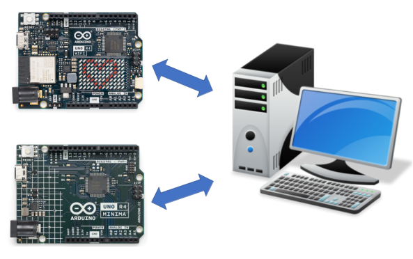

Telemetry is a system for collecting data on a remote device and then automatically transmitting the collected data back to local receiving equipment for processing.
With Telemetrix, you can do things such as establish a GPIO pin as a PWM output pin and set its value to run a DC motor, communicate with your favorite i2c device, have the WIFI's LEDs scroll a message, or monitor temperature using a DHT temperature device, and much more, all within a Python application.
Telemetrix Client-Server Model
Telemetrix is implemented using a client-server model. A "fixed" server is uploaded to the Arduino.
The server communicates with a Telemetrix Python client that sends commands to the Arduino and receives data reports.
Application debugging is simplified by using your favorite Python toolset.
Telemetrix Client-Server Transports
The Arduino UNO R4 Minima uses a USBSerial transport.
For the Arduino UNO R4 WIFI, you can choose a WIFI, USBSerial or BLE transport. There are servers for each of the transport types.
Both Threaded And ASYNCIO Client APIs Are Available For Each Board
Choose whichever one suits your needs.
The transport type is specified for the UNO R4 WIFI when Telemetrix is instantiated.
Data Is Reported Using Callback Methods
When you set a pin mode as an input type, a user-provided callback method is registered to provide data change notifications. Callbacks ensure that data changes are processed as soon as possible and that no data change events are lost. Each data change is time-stamped as it is received.
You may implement the callback scheme as a single callback to handle all data change events or multiple individual callbacks to handle specific pins or input device types, giving you maximum flexibility.
Automatic Data Reporting
Data is reported automatically without polling for analog inputs, digital inputs, DHT temperature sensors, and HC-SR04 distance sensors. Once a pin mode is set, reporting begins immediately.
Summary Of Major Features
- Applications are programmed using Python 3.8 or greater.
- All Data change events are reported asynchronously via user-registered callback functions.
- Each data change event is time-stamped.
- Online API Reference Documentation is provided:
- A complete set of working Minima examples is provided for the Arduino UNO R4 Minima and the Arduino UNO R4 WIFI
- Integrated debugging methods are included as part of the Servers.
- For Arduino UNO R4 WIFI, scrolling transport identifier messages are shown on the display. This feature may be optionally disabled.
A Working Example
Below is a Telemetrix example for the Arduino UNO R4 Mimima that monitors several digital input pins. All the pins share a single callback.
import sys
import time
from telemetrix_uno_r4.minima.telemetrix_uno_r4_minima import telemetrix_uno_r4_minima
"""
Monitor 4 digital input pins.
"""
# Callback data indices
# When the callback function is called, the client fills in
# the data parameter. Data is a list of values, and the following are
# indexes into the list to retrieve report information
CB_PIN_MODE = 0 # The mode of the reporting pin (input, output, PWM, etc.)
CB_PIN = 1 # The GPIO pin number associated with this report
CB_VALUE = 2 # The data value reported
CB_TIME = 3 # A time stamp when the data change occurred
def the_callback(data):
"""
A callback function to report data changes.
This will print the pin number, its reported value and
the date and time when the change occurred
:param data: [report type(i.e. analog, pwm, digital), pin number, current reported
value, timestamp]
"""
date = time.strftime('%Y-%m-%d %H:%M:%S', time.localtime(data[CB_TIME]))
print(f'Report Type: {data[CB_PIN_MODE]} Pin: {data[CB_PIN]} '
f'Value: {data[CB_VALUE]} Time Stamp: {date}')
# instantiate TelemetrixUnoR4Minima
board = telemetrix_uno_r4_minima.TelemetrixUnoR4Minima()
# Set the pin mode for each pin.
# A callback must be specified. A single callback is used for this example, but
# separate callback could be used for each pin.
board.set_pin_mode_digital_input(5, the_callback)
board.set_pin_mode_digital_input(6, the_callback)
board.set_pin_mode_digital_input(7, the_callback)
board.set_pin_mode_digital_inputp(8, the_callback)
try:
while True:
time.sleep(.0001)
except KeyboardInterrupt:
board.shutdown()
sys.exit(0)
And here is some sample output:
telemetrix_uno_r4_minima: Version 1.00
Copyright (c) 2023 Alan Yorinks All Rights Reserved.
Opening all potential serial ports...
/dev/ttyACM0
Waiting 1 seconds(arduino_wait) for Arduino devices to reset...
Valid Arduino ID Found.
Arduino compatible device found and connected to /dev/ttyACM0
Reset Complete
Retrieving Telemetrix4UnoR4Minima firmware ID...
Telemetrix4UnoR4Minima firmware version: 1.0.0
Enter Control-C to quit.
Report Type: 2 Pin: 5 Value: 1 Time Stamp: 2023-07-14 13:34:52
Report Type: 2 Pin: 6 Value: 1 Time Stamp: 2023-07-14 13:34:52
Report Type: 2 Pin: 7 Value: 1 Time Stamp: 2023-07-14 13:34:52
Report Type: 2 Pin: 8 Value: 1 Time Stamp: 2023-07-14 13:34:52
Report Type: 2 Pin: 8 Value: 0 Time Stamp: 2023-07-14 13:35:21
Report Type: 2 Pin: 8 Value: 1 Time Stamp: 2023-07-14 13:35:22
Report Type: 2 Pin: 5 Value: 0 Time Stamp: 2023-07-14 13:35:29
Report Type: 2 Pin: 5 Value: 1 Time Stamp: 2023-07-14 13:35:31
Report Type: 2 Pin: 6 Value: 0 Time Stamp: 2023-07-14 13:35:33
Report Type: 2 Pin: 8 Value: 1 Time Stamp: 2023-07-14 13:35:34